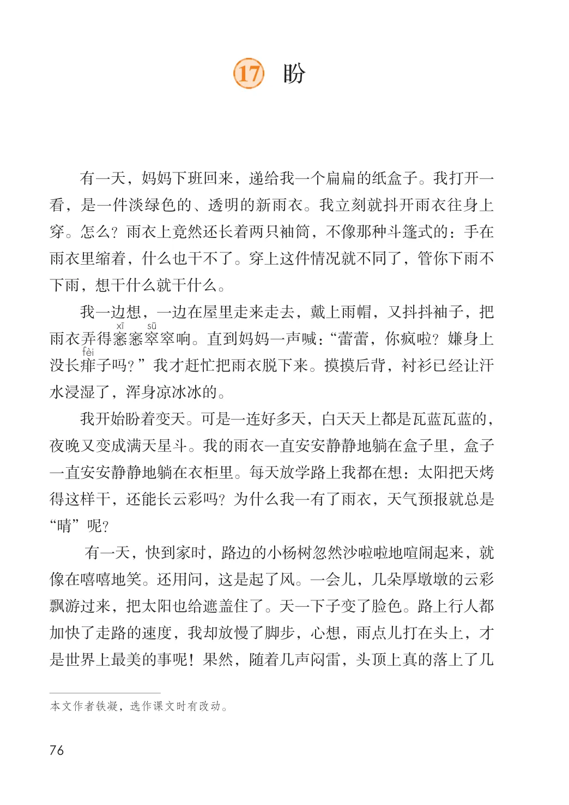
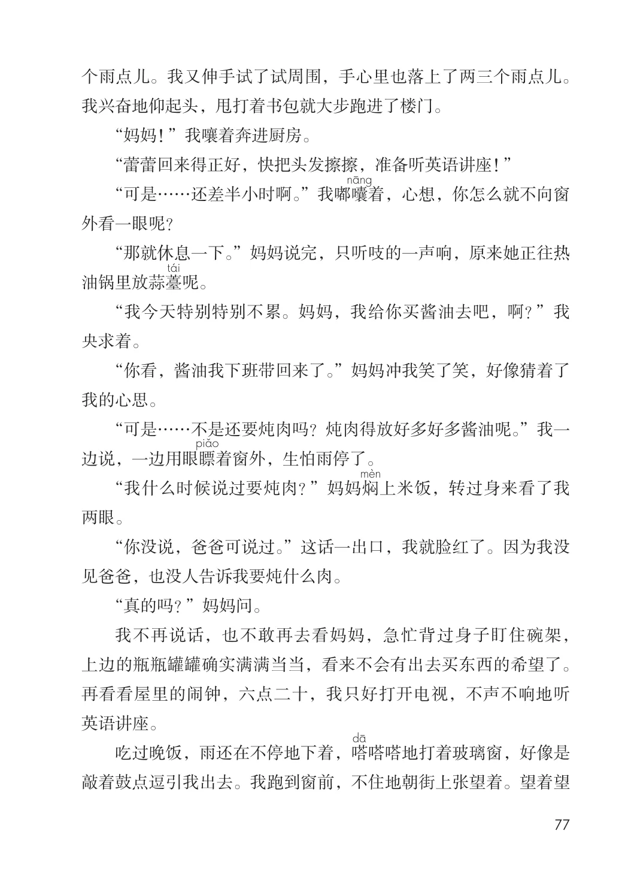
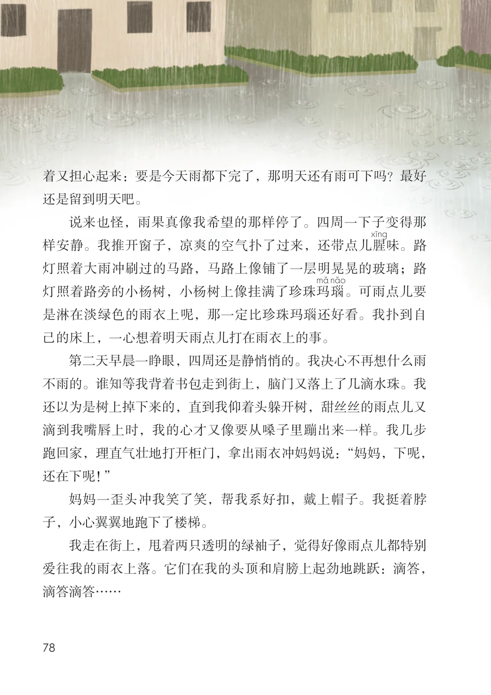
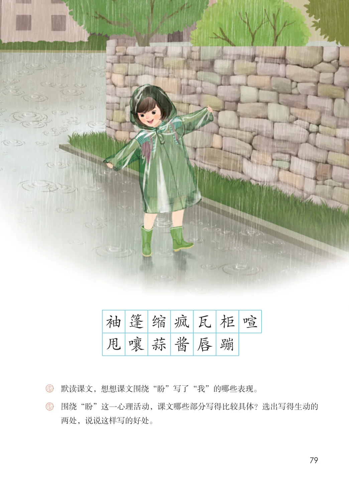
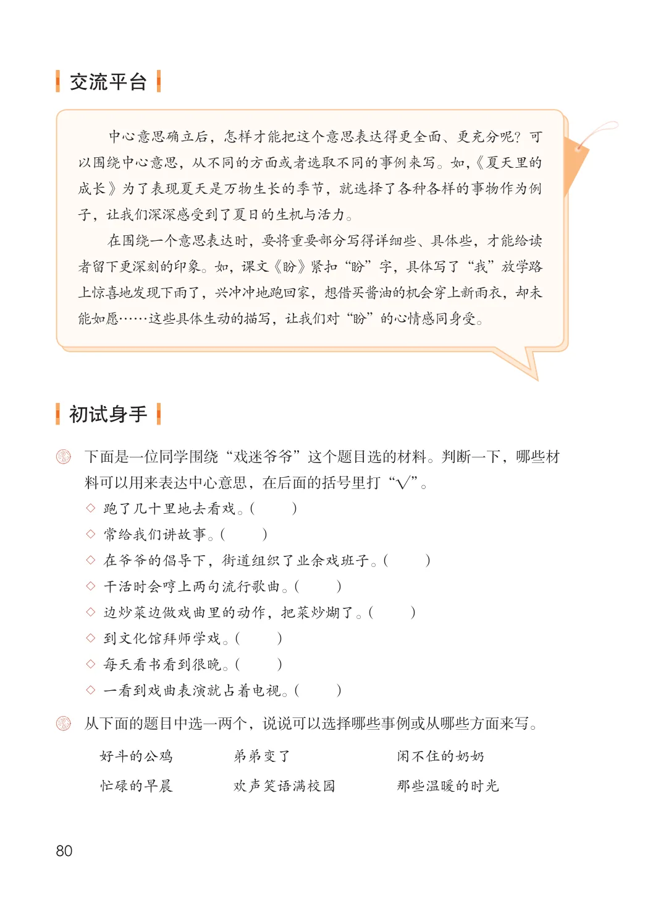

第五单元 · 第 17 课
盼
文字内容 PDF 第 81 页
有一天，妈妈下班回来，递给我一个扁扁的纸盒子。我打开一看，是一件淡绿色的、透明的新雨衣。我立刻就抖开雨衣往身上穿。怎么？雨衣上竟然还长着两只袖筒，不像那种斗篷式的：手在雨衣里缩着，什么也干不了。穿上这件情况就不同了，管你下雨不下雨，想干什么就干什么。
我一边想，一边在屋里走来走去，戴上雨帽，又抖抖袖子，把雨衣弄得窸窸窣窣响。直到妈妈一声喊：“蕾蕾，你疯啦？嫌身上没长痱子吗？”我才赶忙把雨衣脱下来。摸摸后背，衬衫已经让汗水浸湿了，浑身凉冰冰的。
我开始盼着变天。可是一连好多天，白天天上都是瓦蓝瓦蓝的，夜晚又变成满天星斗。我的雨衣一直安安静静地躺在盒子里，盒子一直安安静静地躺在衣柜里。每天放学路上我都在想：太阳把天烤得这样干，还能长云彩吗？为什么我一有了雨衣，天气预报就总是“晴”呢？
有一天，快到家时，路边的小杨树忽然沙啦啦地喧闹起来，就像在嘻嘻地笑。还用问，这是起了风。一会儿，几朵厚墩墩的云彩飘游过来，把太阳也给遮盖住了。天一下子变了脸色。路上行人都加快了走路的速度，我却放慢了脚步，心想，雨点儿打在头上，才是世界上最美的事呢！果然，随着几声闷雷，头顶上真的落上了几
文字内容 PDF 第 82 页
个雨点儿。我又伸手试了试周围，手心里也落上了两三个雨点儿。我兴奋地仰起头，甩打着书包就大步跑进了楼门。
“妈妈！”我嚷着奔进厨房。
“蕾蕾回来得正好，快把头发擦擦，准备听英语讲座！”
“可是……还差半小时啊。”我嘟囔着，心想，你怎么就不向窗外看一眼呢？
“那就休息一下。”妈妈说完，只听吱的一声响，原来她正往热油锅里放蒜薹呢。
“我今天特别特别不累。妈妈，我给你买酱油去吧，啊？”我央求着。
“你看，酱油我下班带回来了。”妈妈冲我笑了笑，好像猜着了我的心思。
“可是……不是还要炖肉吗？炖肉得放好多好多酱油呢。”我一边说，一边用眼瞟着窗外，生怕雨停了。
“我什么时候说过要炖肉？”妈妈焖上米饭，转过身来看了我两眼。
“你没说，爸爸可说过。”这话一出口，我就脸红了。因为我没见爸爸，也没人告诉我要炖什么肉。
“真的吗？”妈妈问。
我不再说话，也不敢再去看妈妈，急忙背过身子盯住碗架，上边的瓶瓶罐罐确实满满当当，看来不会有出去买东西的希望了。再看看屋里的闹钟，六点二十，我只好打开电视，不声不响地听英语讲座。
吃过晚饭，雨还在不停地下着，嗒嗒嗒地打着玻璃窗，好像是敲着鼓点逗引我出去。我跑到窗前，不住地朝街上张望着。望着望
文字内容 PDF 第 83 页
着又担心起来：要是今天雨都下完了，那明天还有雨可下吗？最好还是留到明天吧。
说来也怪，雨果真像我希望的那样停了。四周一下子变得那样安静。我推开窗子，凉爽的空气扑了过来，还带点儿腥味。路灯照着大雨冲刷过的马路，马路上像铺了一层明晃晃的玻璃；路
瑙灯照着路旁的小杨树，小杨树上像挂满了珍珠玛。可雨点儿要是淋在淡绿色的雨衣上呢，那一定比珍珠玛瑙还好看。我扑到自己的床上，一心想着明天雨点儿打在雨衣上的事。
第二天早晨一睁眼，四周还是静悄悄的。我决心不再想什么雨不雨的。谁知等我背着书包走到街上，脑门又落上了几滴水珠。我还以为是树上掉下来的，直到我仰着头躲开树，甜丝丝的雨点儿又滴到我嘴唇上时，我的心才又像要从嗓子里蹦出来一样。我几步跑回家，理直气壮地打开柜门，拿出雨衣冲妈妈说：“妈妈，下呢，还在下呢！”
妈妈一歪头冲我笑了笑，帮我系好扣，戴上帽子。我挺着脖子，小心翼翼地跑下了楼梯。
我走在街上，甩着两只透明的绿袖子，觉得好像雨点儿都特别爱往我的雨衣上落。它们在我的头顶和肩膀上起劲地跳跃：滴答，滴答滴答……
生字与词语
课后练习
- 默读课文，想想课文围绕“盼”写了“我”的哪些表现。围绕“盼”这一心理活动，课文哪些部分写得比较具体？选出写得生动的
- 两处，说说这样写的好处。
课后练习
- 交流平台中心意思确立后，怎样才能把这个意思表达得更全面、更充分呢？可以围绕中心意思，从不同的方面或者选取不同的事例来写。如，《夏天里的
- 成长》为了表现夏天是万物生长的季节，就选择了各种各样的事物作为例子，让我们深深感受到了夏日的生机与活力。在围绕一个意思表达时，要将重要部分写得详细些、具体些，才能给读者留下更深刻的印象。如，课文《盼》紧扣“盼”字，具体写了“我”放学路上惊喜地发现下雨了，兴冲冲地跑回家，想借买酱油的机会穿上新雨衣，却未能如愿……这些具体生动的描写，让我们对“盼”的心情感同身受。初试身手下面是一位同学围绕“戏迷爷爷”这个题目选的材料。判断一下，哪些材料可以用来表达中心意思，在后面的括号里打“√”。
- ◇跑了几十里地去看戏。（ ）
- ◇常给我们讲故事。（ ）
- ◇在爷爷的倡导下，街道组织了业余戏班子。（ ）
- ◇干活时会哼上两句流行歌曲。（ ）
- ◇边炒菜边做戏曲里的动作，把菜炒煳了。（ ）
- ◇到文化馆拜师学戏。（ ）
- ◇每天看书看到很晚。（ ）
- ◇一看到戏曲表演就占着电视。（ ）
- 从下面的题目中选一两个，说说可以选择哪些事例或从哪些方面来写。好斗的公鸡 弟弟变了闲不住的奶奶忙碌的早晨 欢声笑语满校园 那些温暖的时光
原版对照
原书页面与全部插图
点击图片可查看大图。




